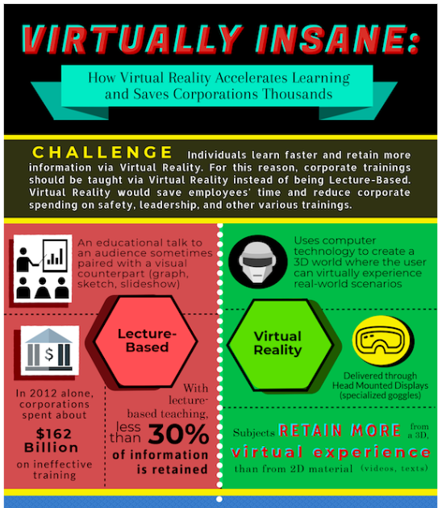
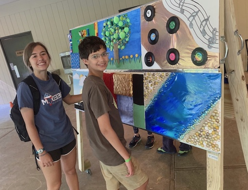
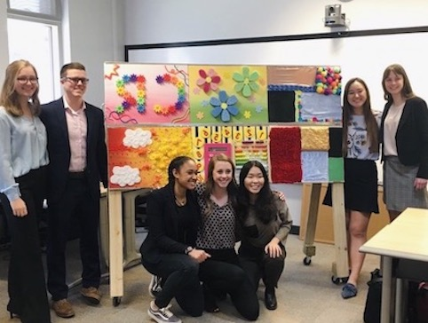

Projects
While I’m always doing projects in class (all in C and organized on GitHub), below are some projects I pursued outside of the classroom that influenced my passions and goals. They're organized similar to a typical resume, with the most recent projects at the top.
Diversity and Inclusion Research with Purdue University’s College of Electrical and Computer Engineering (ECE) (Summer 2019)
- Worked with Purdue's College of ECE’s Diversity and Inclusion Committee to identify initiatives and actions that are contributing to the differing levels of diversity and inclusion between engineering disciplines (why might one discipline be more inclusive than another).
- Individually interviewed 15 students from various engineering disciplines (students with disabilities, international students, women, minorities, LGBTQ+ members); cleaned and analyzed 15+ hours of qualitative data.
Virtual Reality Infographic (Spring 2019)
- Created and copyrighted an infographic that highlights how Virtual Reality better suits our society today. Traditional lecture-style teaching results in a lack of information retention and has negative effects not only in the classroom, but in the workforce (employee training can be ineffective).
- Instead of lecture-style teaching, using virtual reality to put users in life-like, sensory-stimulating simulations increases retention, accelerates the learning curve, and saves both individuals and corporations time and money.

Pictured above is a a portion of the infographic. View the whole infographic here
Sensory Easel for Camp Riley (Aug 2018 - May 2019)
- EPICS at Purdue University is a service-learning design program in which teams of students partner with organizations to address human, community, and environmental needs. I lead the team of students that worked with Camp Riley, an organization that empowers children with disabilities (aged 8-18) by hosting a summer camp tailored to their individual needs.
- Our team was challenged with brainstorming, designing, building, and delivering a safe, fun, interactive device that the campers could use to develop their tactile senses and motor skills. We designed and built a “Sensory Easel” (pictured below) that had 16+ panels (can be swapped). Each panel focused on stimulating different senses (touch, sound, visual).
  In the top photo above are two campers interacting with the easel at Camp Riley. On the lower photo is our entire team with our Sensory Easel. After 2 whole semesters and passing all the safety specifications, we were ready for delivery!
Molecular Identifier Program (MATLAB, 2018)
- Wrote a MATLAB program that analyzes any molecular compound and determines numerous molecular characteristics (Atomic Number, Bond Length, Electron Structure, Molecular Structure, Formal Charge, Bond Angle, Ideal Bond Angle variation).
Video Game Construction (JAVA, 2016)
- Coded in Java to construct a Super Mario Bros (parody) computer game. This was my first, major coding project where I learned about debugging, the importance of constantly compiling your code, and coding in small segments at a time.
- Utilized various algorithms (Divide-and-conquer algorithm, Binary Search, Sublist Search); familiarized with fundamentals of coding.
- Won Most Creative for the game design, variety of game additions, and means of simplifying code.